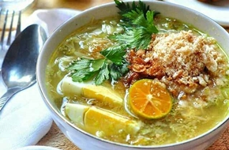

< < Daftar resep
bahan |
cara memasak

Soto Lamongan
Soto Lamongan adalah sajian makanan soto ayam yang khas dari Lamongan, Jawa Timur. Soto Lamongan merupakan salah satu makanan tradisional dari Lamongan yang sangat terkenal kelezatannya. Tidak hanya di daerahnya sendiri, namun juga merupakan masakan yang sangat terkenal di indonesia.
Soto Lamongan ini sedikit berbeda dengan soto lainnya. Salah satu ciri khas dari Soto Lamongan ini terletak pada serbuk krupuk udangnya yang sering disebut Poya. Apabila serbuk Poya tersebut di campurkan dengan kuahnya maka akan menghasilkan rasa gurih yang khas pada Soto Lamongan ini. selain rasanya nikmat, aroma Soto Lamongan ini juga sangat menggugah selera.
Bahan-bahan:
- 1 ekor (1 kg) ayam kampung
- 2 liter air
- 3 sdm minyak sayur
- 2 batang daun bawang, potong kasar
- 2 batang serai, memarkan/li>
- 3 lembar daun jeruk purut
- 3 lembar daun salam
- 3 cm lengkuas, memarkan
- 2 buah tomat, iris kasar
- 50 g kol, iris kasar
- 2 butir telur rebus
- bawang merah goreng
- jeruk nipis
Cara Memasak:
- Potong ayam menjadi 4 bagian lalu cuci bersih dan tiriskan.
- Didihkan air dalam panci, masukkan ayam, kecilkan api. Masak hingga daging ayam hampir lunak.
- Tumis Bumbu Halus hingga wangi.
- Tambahkan serai, daun jeruk, daun salam dan lengkuas. Aduk hingga harum, angkat, masukkan ke dalam rebusan ayam. Tambahkan air hingga kaldunya 2 liter.
- Masukkan daun bawang, kecilkan api. Masak terus hingga ayam lunak. Matikan api.
- Angkat potongan ayam dan tiriskan.
Penyajian:
- Angkat potongan ayam dan tiriskan.
- Tuangi kaldu panas. Taburi koya udang.
- Sajikan dengan Pelengkapnya.
kembali keatas
< < Daftar resep